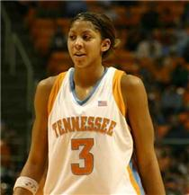

Candace Parker won Back to Back tournaments in 2007 and 2008 while being the first ever female to prefrom a dunk in the tournament. She redshirted her Freshamn Year due to injury, but then continued to be a starter at Tenessee for her next 3 years in the program.
If You Want to Learn More About Candace Parker Click HereWomens March Maddness
History
Historical Coaches
Historical Players
Candace Parker

Lorri Bauman